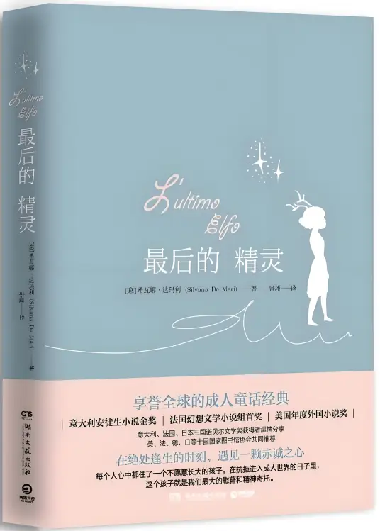

我的爱好
喜欢的游戏
这些游戏陪伴我度过了许多课余时间，它们的故事和玩法给了我很多灵感
-

CSGO
枪火交响的战术沙盘，弹道轨迹与心跳共振的感官战场，每一帧阴影都是生死博弈的无声诗篇。
-
饥荒
荒诞手绘编织的生存诗篇，每一次死亡都是向深渊投去的倔强火把，在永夜与饥寒中丈量人性的韧度。
-

幽浮2
策略战棋的硬核巅峰，场景破坏与战术隐匿交织的战场艺术，每一局都是人类绝境反击的史诗交响。
喜欢的书籍
阅读是我拓展视野的重要方式，这些书籍给了我很多思考和启发
-
百年孤独
魔幻现实主义的百年史诗，布恩迪亚家族七代人宿命般的轮回与挣扎，马孔多的每一阵飓风都裹挟着拉丁美洲的血泪与孤独。
-
三体
宇宙尺度的文明博弈，从“黑暗森林”法则到“二向箔”的降维打击，每个质子都倒映着人性在存亡绝境前的深渊光芒。
-

最后的精灵
献给成年人的治愈童话，精灵约许与最后的龙在末日暴雨中守护微光，每一次天真的坚持都是对人性荒原的温柔叛离。
爱好与我的联系
课余的微光里，我栖身于游戏叙事的星河与书页叠砌的巴别塔。虚拟的茧房孵化万千未诞生的世界，而文字的罗盘总在思维边境刻下新的坐标。当想象力汲取这双重源流的滋养，便在前路悄然生长为藤蔓——终将攀援至我亲手铸造的、属于未来游戏的史诗穹顶